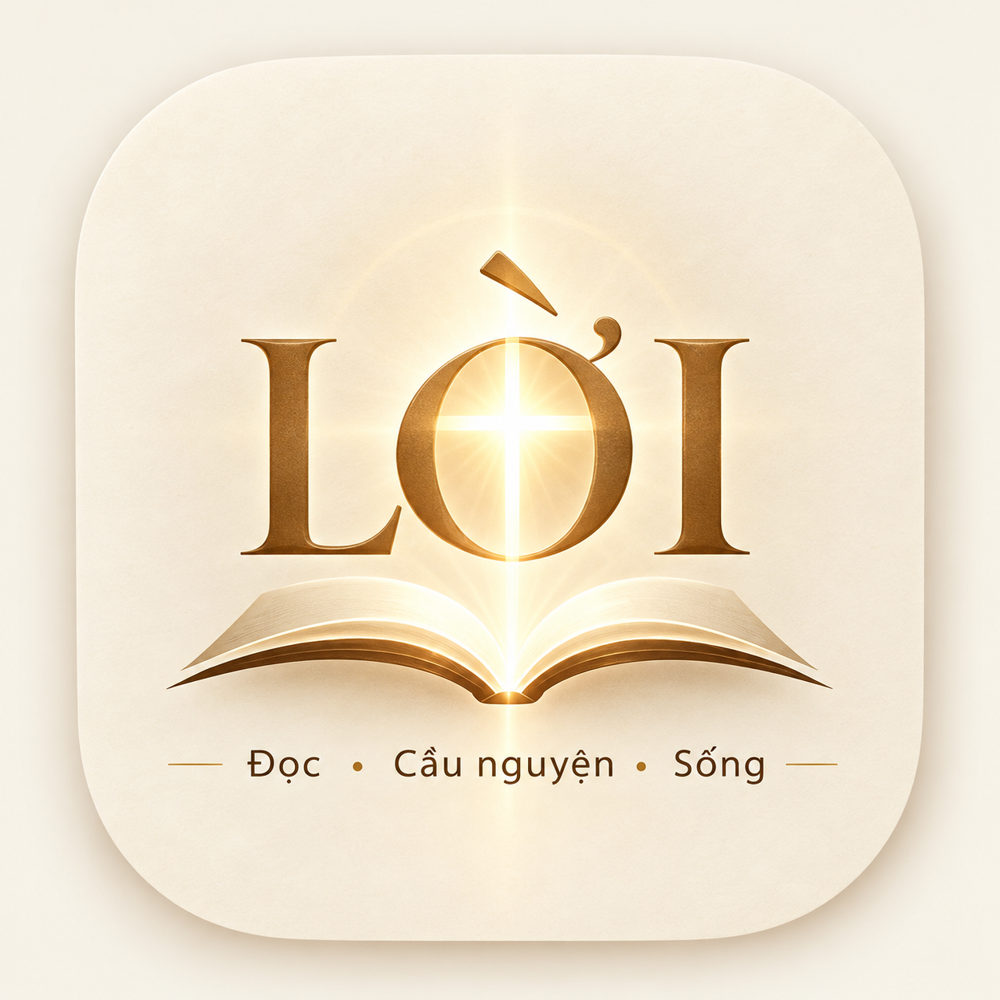

Chính sách quyền riêng tư
Áp dụng cho ứng dụng LỜI trên iOS và Android · Cập nhật: tháng 10/2026
Tóm tắt
Dữ liệu lưu trên máy của bạn
Một vài lựa chọn được lưu ngay trên điện thoại để ứng dụng nhớ cho lần sau: chế độ sáng/tối, cỡ chữ, bài hát yêu thích, chương Kinh Thánh đang đọc. Các dữ liệu này không bao giờ rời khỏi máy và sẽ bị xóa khi bạn gỡ ứng dụng.
Nội dung từ dịch vụ bên ngoài
Một số phần của LỜI hiển thị nội dung từ các trang khác. Khi bạn mở những phần này, máy của bạn kết nối trực tiếp tới dịch vụ đó, và việc này tuân theo chính sách riêng của họ:
- Bài đọc và Kinh Thánh: trang ktcgkpv.org của Nhóm Phiên Dịch Các Giờ Kinh Phụng Vụ.
- Thánh ca: trình phát video chính thức của YouTube (Chính sách quyền riêng tư của Google).
- Ảnh các thánh: Wikimedia Commons (chính sách của Wikimedia).
LỜI không gửi thông tin nào về bạn cho các dịch vụ này.
Trẻ em
LỜI phù hợp với mọi lứa tuổi và không thu thập dữ liệu của bất kỳ ai, kể cả trẻ em.
Thay đổi
Nếu chính sách này thay đổi, phiên bản mới sẽ được đăng tại trang này cùng ngày cập nhật.
Liên hệ
Mọi thắc mắc xin gửi về: loichua.app@gmail.com
Privacy Policy (English)
LỜI does not collect, store or share any personal data. The app requires no account, shows no ads and uses no tracking or analytics. A few preferences (theme, text size, favorite songs, last Bible chapter) are stored only on your device and are deleted when you uninstall the app. When you open the daily readings or Bible (ktcgkpv.org), hymn videos (YouTube) or saint images (Wikimedia Commons), your device connects directly to those services under their own privacy policies; LỜI sends them no information about you. Contact: loichua.app@gmail.com